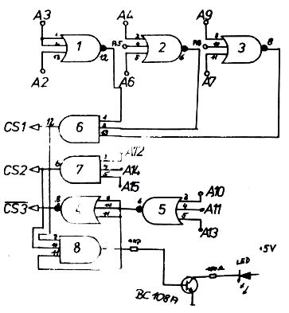
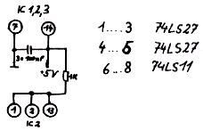

Nascom Journal |
5/80 |
a) Hardware
Es wurde eine Graphikkarte mit 256 X 256 Bildpunkten verwendet, da sie einige Vorteile gegenüber anderen Produkten aufweist. Das Setzen eines der 65536 Bildpunkte (mehr als APPLE !) dauert maximal 1,5 µs, ferner ist standardmäßig eine Cursorsteuerung vorhanden. Durch eine Erweiterungsschaltung kann die Schwarzweißdarstellung auf 16 Graustufen, mit einer Europa-Karte sogar auf 16 Farben (FBAS oder RGB-Ausgang), gebracht werden. Sowohl das Graphik-Interface als auch die Erweiterungen sind jeweils auf einer Europa – Karte untergebracht; die Gesamt-Verlustleistung ohne Erweiterung beträgt nur 5 Watt. Die Ansteuerung der Bildpunkte benötigt lediglich 4 Speicherstellen, während bei anderen Systemen 8K Byte Arbeitsspeicher benutzt werden müßten. Diese 4 Speicherstellen liegen zwischen D000’H und D003’H und stellen einen günstigen Kompromiß dar, da bei einem 48K RAM System dies die erste freie Adresse ist. Da in diese vier Speicherstellen nur hineingeschrieben wird, gibt es keine Probleme mit EPROMs, die diese Adressen belegen, da der EPROM-Inhalt erst bei zusatzlichem RD-Aktiv freigegeben wird. Dieses bleibt bei Schreiboperationen bekanntlich inaktiv! Die Graphik ist intern als x/y-System ausgelegt d.h.: zum Setzen eines Punktes wird dem Interface erst die x-Adresse des Punktes, danach die y-Adresse und schließlich noch ein ein Befehlswort zum Setzen des Punktes angegeben (genaue Beschreibung im Software-Teil) . Ausgansseitig liefert die Graphik ein Video-Composite (BAS) Signal mit einer Amplitude von 2,5 Vss und eignet sich damit zur Ansteuerung praktisch aller Monitore bzw. modifizierten Fernsehgeräte. Ferner sind noch die TTL synchron- und horizontal-Signale für Spezialmonitore abgreifbar.
Die Anschaltung an den NASBUS ist sehr einfach: es liegt höchstens eine LS-TTL Last an.
| Graphik | NASBUS |
| RS0 | A0 (Leitung Nr. 30) |
| RS1 | A1 (Leitung Nr. 31) |
| R/W | WR (Leitung Nr. 28) |
| D0…D7 | D0…D7 (Leitung Nr. 50- 57) |
Die drei Chip-Select Eingange der Graphikkarte werden mit folgender Dekodierung verbunden :
Abbildung 2
| Seite 9 von 16 |
|---|